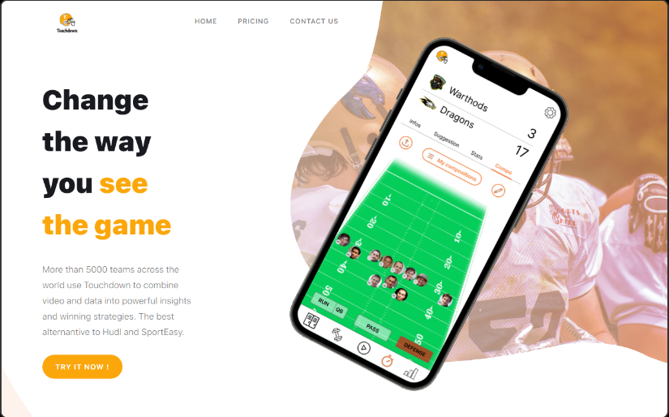

<div>
    
    <div style="padding-left: 10px; padding-right: 10px;">
        <h1>Mon portfolio</h1>
        <p style="margin-bottom: 0; padding-bottom: 30px;">Pour ce projet il s'agit de la landing-page e-commerce de get-touchdown, pour leur landing page j'ai réaliser quelque chose de très "catchy" avec des effets attirants l'oeil,
            quelque chose de créatif et original.<br><br>
            Le framework Next.js à été utilisé pour ce projet, ce dernier est héberger sur Vercel une intégration continue et un déploiement continue on été mis en place (CI/CD). J'ai également lié le site à Stripe (un module de paiement).
        </p>
    </div>
</div>